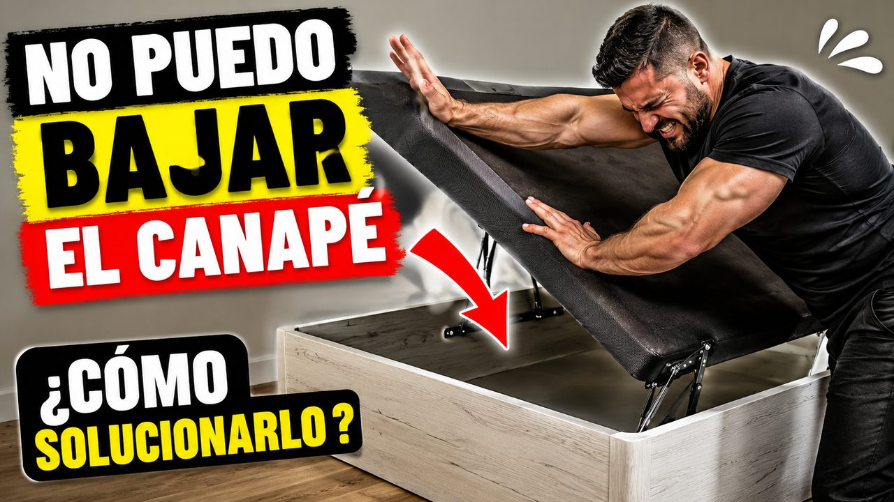

No puedo bajar el canapé: ¿por qué y cómo solucionarlo?

0:58La solución está en el colchón
Si te pasa esto, quédate y te explicamos por qué puede ser. Es importante conocer esta información antes de comprar un canapé abatible nuevo. Y si ya tienes el canapé con la tapa en alto y no baja, también te será útil.
Para bajar el canapé hay que usar el colchón. No va de fuerza, sino del peso que reparte el colchón sobre la superficie del canapé de forma compensada y uniforme.
Si haces mucha fuerza, o incluso te cuelgas de la tapa abatible, lo que ocurrirá es que se forzarán los anclajes y se romperá. Antes se romperá que bajará bien. Lo correcto: monta el canapé, coloca el colchón encima y solo entonces ciérralo.
Preguntas frecuentes sobre el canapé abatible
¿Por qué no puedo bajar la tapa de mi canapé abatible?
Normalmente porque no se está usando el colchón. El colchón reparte el peso de forma compensada y uniforme sobre la tapa, y eso es lo que permite cerrarla bien.
¿Cómo se baja un canapé abatible?
Monta el canapé, coloca el colchón sobre él y solo entonces cierra la tapa.
¿Puedo bajar el canapé haciendo fuerza o colgándome de la tapa?
No. Se fuerzan los anclajes y se rompen. Antes se romperá que baje bien.
¿Qué hago si ya tengo la tapa del canapé en alto y no baja?
Coloca el colchón sobre el canapé y ciérralo con él puesto, sin hacer fuerza bruta.
¿Qué conviene saber antes de comprar un canapé abatible nuevo?
Que el colchón forma parte del cierre: el canapé se cierra con el colchón encima. Verlo antes de comprar te evita problemas y roturas.
Búsquedas relacionadas
No puedo bajar el canapé · canapé abatible no baja · cómo cerrar un canapé abatible · la tapa del canapé no baja · canapé abatible roto.